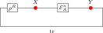

14 Exponential Decay of Correlations
This chapter derives the transfer-matrix expression for thermodynamic-limit correlators of a normal MPS and the resulting exponential decay estimate. The key mechanism is spectral: after removing the leading eigenvalue contribution, the connected part is governed by subleading eigenvalues of the transfer map.
When the MPS tensor generates a parent Hamiltonian (Chapter 13), the correlator quantifies spatial correlations in the ground state. The exponential decay rate is set by the spectral properties of the transfer map, i.e. by the modulus of its subleading eigenvalues.
The spectral analysis of the transfer map and the mixed transfer operator, including the eigenvalue bound \(\rho (F_{AB}) \le 1\), the strict transfer-operator gap \(\rho (F_{AB}) {\lt} 1\) for non-equivalent blocks, and the resulting overlap decay, is developed in Chapter 7. This chapter focuses on the correlator side: one-point and two-point expectations, their spectral decomposition, and quantitative bounds on decay rates.
14.1 Connected correlators from the transfer map
Fix an MPS tensor and a right fixed point of its transfer map. Write the tensor as \(A\) and the fixed point as \(\rho ^R\). Under the hypotheses of Theorem 6.11, that fixed point exists and is unique up to scaling; we normalize it so that \(\operatorname{tr}(\rho ^R)=1\). For a local observable \(X \in M_{D}(\mathbb {C})\) define
For observables \(X,Y \in M_{D}(\mathbb {C})\) and \(n\ge 0\),
Equivalently: insert \(X\) at site \(0\), propagate by \(\mathcal{E}_A^n\), then insert \(Y\) and take the trace.

The connected two-point function is
14.2 Spectral expansion and exponential decay
If coefficients \(c_j\in \mathbb {C}\) and eigenvalues \(\lambda _j\in \mathbb {C}\) (\(j=1,\dots ,D^2-1\)) satisfy, for all \(n\ge 0\),
then the connected correlator equals the stated sum of exponentials. The source [ CPGSV21 , Section II.B.3 ] states that the connected correlator is a sum of \(D^2-1\) pure exponentials \(C(X,Y;n) = \sum _{j\ge 2}^{D^2} c_{XY}(j)\lambda _j^n\), which always exists for a normal MPS via the transfer-map spectral decomposition.
Given the expansion hypothesis, the equality is immediate. The source [ CPGSV21 , Section II.B.3 ] derives this expansion from the spectral decomposition of \(\mathcal{E}_A^n\) restricted to the complement of the fixed-point eigenspace: the leading eigenvalue \(\lambda _1=1\) contributes \(\langle X_0\rangle \langle Y_0\rangle \), which is subtracted in the connected correlator, leaving the sum over subleading eigenvalues.
If a constant \(C_{XY}\in \mathbb {R}\) and \(\lambda _2\in \mathbb {C}\) satisfy, for all \(n\ge 0\),
then the connected correlator satisfies that exponential decay bound. The source [ CPGSV21 , Section II.B.3 ] obtains this by combining the sum-of-exponentials expansion with the triangle inequality, and Sec. 4 provides the transfer-map gap condition \(|\lambda _j|{\lt}1\) for the subleading eigenvalues.
Given the bound hypothesis, the estimate is immediate. The source [ CPGSV21 , Section II.B.3 ] obtains this bound by applying the triangle inequality to the sum-of-exponentials expansion and using the transfer-map gap condition \(|\lambda _j|\le |\lambda _2|{\lt}1\) for all subleading eigenvalues.
The hypothesis “\(|\lambda _2| {\lt} 1\)” in Theorem 14.5 is a transfer-map gap condition: all non-leading eigenvalues of \(\mathcal{E}_A\) lie strictly inside the unit disk. It is distinct from the Hamiltonian spectral gap of Chapter 13. The complementary transfer-map gap \(\rho (\mathcal{E}_A - P) {\lt} 1\) is established for primitive channels (Theorem 4.67, Chapter 4). The mixed-transfer gap needed for block separation is supplied for irreducible trace-preserving tensors (Theorem 7.29), and quantitative single-tensor transfer-map bounds for injective tensors are recorded in Theorem 14.11. Thus the analytical input needed to make Theorems 14.4 and 14.5 unconditional is already present; what remains is extracting the spectral expansion coefficients \(c_j,\lambda _j\) from the eigendecomposition of \(\mathcal{E}_A\) (Issue #1447).
The correlation length associated with a subleading eigenvalue \(\lambda _2\) of the transfer map (\(|\lambda _2|{\lt}1\)) is
If \(|\lambda _2| {\lt} 1\) and \(\lambda _2 \ne 0\), then \(\xi {\gt} 0\).
Since \(0 {\lt} |\lambda _2| {\lt} 1\), we have \(\log |\lambda _2| {\lt} 0\), so \(\xi = -1/\log |\lambda _2| {\gt} 0\).
14.3 Quantitative transfer-map gap bounds
The transfer-map gap theorems in Chapter 4 establish \(\rho (\mathcal{E}_A - P) {\lt} 1\) for primitive channels qualitatively. This section gives the quantitative refinements with explicit constants and rates for the single-tensor transfer map \(\mathcal{E}_A\).
Fix an injective, trace-preserving MPS tensor \(A\) with positive definite fixed point \(\rho \). Let
be the corresponding fixed-point projection. Then there exist \(C {\gt} 0\) and \(0 {\lt} \delta \le 1\) such that for all \(n \ge 0\) and \(X \in M_{D}(\mathbb {C})\),
The transfer-map gap \(\delta \) exists by primitivity (Theorem 4.67, the complementary transfer-map gap).
Injectivity implies primitivity of the transfer map. The complementary spectral radius \(\rho (\mathcal{E}_A - P) {\lt} 1\) then follows from the primitive transfer-map gap theorem for the complementary map. The Gelfand formula yields a geometric bound \(\| \, (\mathcal{E}_A - P)^n\| \le C\, (1-\delta )^n\) for suitable constants, giving the claimed estimate.
For an injective trace-preserving MPS tensor, there exist \(C {\gt} 0\) and \(\xi {\gt} 0\) such that for all \(n \ge 0\) and all traceless \(X \in M_{D}(\mathbb {C})\) (i.e. \(\operatorname{tr}(X) = 0\)),
Traceless matrices lie in \(\ker P\), where \(P\) is the fixed-point projection. Since \(\mathcal{E}_A - P\) has spectral radius strictly less than \(1\), the Gelfand formula gives exponential decay at rate \(\xi = -1/\log \rho (\mathcal{E}_A - P)\).
For traceless \(X\) we have \(P(X) = 0\), so \(\mathcal{E}_A^n(X) = (\mathcal{E}_A - P)^n(X)\). The exponential convergence theorem gives a geometric bound \(C\, (1-\delta )^n\, \| X\| \). Rewriting \((1-\delta )^n = e^{-n/\xi }\) with \(\xi = -1/\log (1-\delta )\) yields the claimed estimate.
For an injective trace-preserving MPS tensor, there exists \(\delta {\gt} 0\) such that every eigenvalue \(\mu \neq 1\) of the transfer map satisfies \(|\mu | \le 1 - \delta \).
Injectivity implies eventual full Kraus rank. This yields primitivity, hence a complementary transfer-map gap. Since the transfer map has only finitely many eigenvalues, one may choose a uniform \(\delta {\gt} 0\) separating \(1\) from the remaining spectrum.
14.4 Relation to parent Hamiltonians
14.5 Renormalization fixed points and zero correlation length
An MPS tensor \(A\) is a renormalization fixed point (RFP) when its transfer map is idempotent, \(\mathcal{E}_A \circ \mathcal{E}_A = \mathcal{E}_A\). See [ CPGSV16 , Definition 3.2 ] .
Suppose there exists an isometry \(V : \mathbb {C}^d \to \mathbb {C}^{d^2}\), written as coefficients \(V_{(i_1,i_2),j}\), such that
for all \(i_1,i_2 \in \{ 0,\ldots ,d-1\} \). Then \(A\) is a renormalization fixed point. This is the backward direction of [ CPGSV16 , Theorem 3.1 ] .
Expanding \(\mathcal{E}_A^2\) gives a double Kraus sum indexed by pairs \((i_1,i_2)\). Substituting the decomposition (??) and using the isometry relation \(V^\dagger V = 1\) collapses the double sum to the single Kraus family \(\{ A^j\} \), hence \(\mathcal{E}_A^2 = \mathcal{E}_A\).
An MPS tensor \(A\) is a renormalization fixed point if and only if there exists an isometry \(V : \mathbb {C}^d \to \mathbb {C}^{d^2}\), written as coefficients \(V_{(i_1,i_2),j}\) with \(V^\dagger V = 1\), such that
for all \(i_1,i_2 \in \{ 0,\ldots ,d-1\} \). This is [ CPGSV16 , Theorem 3.1 ] .
The backward implication is Theorem 14.14. For the forward implication, expanding \(\mathcal{E}_A^2 = \mathcal{E}_A\) as a Kraus sum gives, for every \(X\),
Theorem 16.29 then supplies the isometry \(V\) relating the two Kraus families.
For the single-block convention used here, local orthogonality means
The source local-orthogonality condition for a BNT family is instead the collection of mixed-sector equations for distinct components,
Thus this definition records the one-block idempotence convention.
Let \((A_j)_j\) be the BNT components of a tensor in canonical form. The family is locally orthogonal when, for every pair of distinct components,
This is the mixed-sector condition of [ CPGSV16 , Definition 3.5 ] .
Let \((A_j)_j\) be a basis of normal tensors for \(A\). The BNT zero-correlation-length condition is that
and, for every pair of distinct BNT components,
This is [ CPGSV16 , Definition 3.6 ] .
If \(A\) is a nonzero normal RFP tensor, then \(A\) is injective.
The RFP condition \(\mathcal{E}_A^2 = \mathcal{E}_A\) implies that the cumulative span \(\operatorname{span}\{ A^w : |w| \le n\} \) stabilises after one step. Since \(A\) is normal (hence has an injective blocked form), the one-step span already equals \(M_{D}(\mathbb {C})\), so \(A\) is injective.
Assume \(D {\gt} 0\). Let \(A\) be a normal renormalization fixed point such that
Then \(A\) is injective. This is the left-canonical injectivity step in [ CPGSV16 , Appendix B ] .
The normalization \(\sum _i (A^i)^\dagger A^i = \mathbb {1}\) forces at least one matrix \(A^i\) to be nonzero, since otherwise the left-hand side would vanish. Hence \(A\) is a nonzero normal renormalization fixed point, and Theorem 14.19 applies.
Assume \(D {\gt} 0\). Let \(A\) be a normal renormalization fixed point such that
Then there exist a unitary \(U\) and a diagonal positive definite matrix \(\Lambda \) such that, for \(B^i := U^\dagger A^i U\),
This is the diagonal fixed-point reduction in [ CPGSV16 , Appendix B ] .
By Theorem 14.20, the tensor \(A\) is injective. Therefore its transfer map is irreducible, and hence \(A\) is irreducible as a tensor. Applying Theorem 9.20 gives a unitary conjugate \(B\) for which the trace-preserving normalization remains valid and a diagonal positive definite matrix \(\Lambda \) with \(\mathcal{E}_B(\Lambda ) = \Lambda \).
Let \(A\) be an injective left-canonical RFP tensor with positive-definite fixed point \(\rho \) of the transfer map \(\mathcal{E}_A\). Then \(\mathcal{E}_A = P_\rho \), where \(P_\rho (X) = \frac{\operatorname{tr}(X)}{\operatorname{tr}(\rho )} \rho \) is the rank-one fixed-point projection.
The exponential convergence bound gives \(\lVert \mathcal{E}_A^n(X) - P_\rho (X)\rVert \le C(1-\delta )^n\lVert X\rVert \). Idempotence of \(\mathcal{E}_A\) implies \(\mathcal{E}_A^{n+1} = \mathcal{E}_A\) for all \(n \ge 0\), so \(\lVert \mathcal{E}_A(X) - P_\rho (X)\rVert \le C(1-\delta )^{n+1}\lVert X\rVert \) for all \(n\). Taking \(n \to \infty \) gives \(\mathcal{E}_A = P_\rho \).
A normal tensor \(A\) in canonical form II that is a renormalization fixed point admits a decomposition \(A^i = X \Lambda U^i X^{-1}\), where \(\Lambda \) is diagonal positive, \(\sum _i (U^i)^\dagger U^i=I\), and
Combine the diagonal fixed-point reduction with the rank-one classification of injective left-canonical RFP tensors. One then writes the resulting rank-one projector in a normalized matrix-unit Kraus form, applies Kraus freedom to identify the pair-index coefficients, and transports the decomposition back through the conjugation. The matrix-unit normalization contributes the factor \(D^{-1}\) in the pair-index equation.
A normal tensor \(A\) in canonical form II that is a renormalization fixed point admits a decomposition \(A^i = X \Lambda U^i X^{-1}\), where \(\Lambda \) is diagonal positive and
This is the unit pair-index convention of [ CPGSV16 , Section 3 ] . The statement still does not impose the trace-normalization \(\operatorname{tr}(\Lambda )=1\).
Apply Theorem 14.23, then set \(\widetilde U^i=\sqrt D\, U^i\) and \(\widetilde\Lambda =D^{-1/2}\Lambda \). Since \(\widetilde\Lambda \widetilde U^i=\Lambda U^i\), the decomposition \(A^i=X\widetilde\Lambda \widetilde U^iX^{-1}\) still holds. The pair-index contraction becomes
When each block \(A_k\) of a multi-block tensor is a normal, left-canonical renormalization fixed point, that block admits the isometry decomposition \(A_k^i = X_k \Lambda _k U_k^i X_k^{-1}\), with \(X_k\) invertible, \(\Lambda _k\) diagonal positive, and \(U_k = (U_k^i)\) satisfies \(\sum _i (U_k^i)^\dagger U_k^i = I\) and the pair-index orthonormality condition
This is the blockwise form of the isometry canonical form (Theorem 14.23); see [ CPGSV16 , Section 3 ] . The source additionally imposes the normalization \(\operatorname{tr}(\Lambda _k) = 1\); the statement here gives positive \(\Lambda _k\) without it. That normalization is genuine rather than a conjugation gauge, since rescaling \(\Lambda _k \mapsto \Lambda _k/\operatorname{tr}(\Lambda _k)\) factors out as an overall scalar on \(A_k^i\) (conjugation by \(X_k\) preserves the scale); the statement is thus the un-normalized isometry form. Scope restriction (source isometry). Corollary III.cor3 also invokes the joint isometry condition
The theorem above records the contracted per-block condition \(\sum _i (U_k^i)^\dagger U_k^i=I\) and the diagonal pair-index equation with right-hand side \(D_k^{-1}\delta _{\alpha ,\alpha '}\delta _{\beta ,\beta '}\). It does not impose the trace-normalization \(\operatorname{tr}(\Lambda _k)=1\), and it does not include the cross-block equations for \(k\ne \ell \). This restriction is recorded in docs/paper-gaps/cpsv16_rfp_isometry_scope.tex.
Apply Theorem 14.23 to each block.
Under the hypotheses of Theorem 14.25, each block admits a decomposition \(A_k^i = X_k \Lambda _k U_k^i X_k^{-1}\) with \(\Lambda _k\) diagonal positive and
This is a blockwise unit pair-index comparison. It still does not impose the source trace-normalization of \(\Lambda _k\) or the cross-block orthogonality equations for distinct blocks.
Apply Theorem 14.24 to each block.
For a family of tensors in canonical form, every block is injective. This is a direct projection of the injectivity field of the canonical-form predicate; see [ CPGSV16 , Section 2.3 ] .
Immediate from the block_injective field of IsCanonicalForm.
For a tensor in canonical form with blocks \((A_k)\) and weights \((\mu _k)\), the iterated blocking \(\mathcal{E}_{A_k}^{2^n}\) converges pointwise to an idempotent linear map \(\mathcal{E}_\infty \) as \(n\to \infty \). That is, there exists \(\mathcal{E}_\infty \) with \(\mathcal{E}_\infty ^2 = \mathcal{E}_\infty \) such that \(\mathcal{E}_{A_k}^{2^n}(\rho ) \to \mathcal{E}_\infty (\rho )\) for all density matrices \(\rho \). This is [ CPGSV16 , Appendix B ] .
Each block is injective and left-canonical, so its transfer map is a primitive channel with a unique positive-definite fixed point \(\rho _0\). The exponential convergence bound \(\lVert \mathcal{E}^n(X) - P(X)\rVert \le C(1-\delta )^n \lVert X\rVert \) (Theorem 14.9) then gives pointwise convergence \(\mathcal{E}^n(X)\to P(X)\), and composing with the subsequence \(2^n\to \infty \) yields the result. The witness \(\mathcal{E}_\infty = P\) is the rank-one fixed-point projection, which is idempotent.
When the transfer map is idempotent (\(\mathcal{E}^2=\mathcal{E}\)), connected correlations become separation-independent for all separations \(n \ge 1\). Informally, this corresponds to zero correlation length (\(\xi =0\)). The full spectral equivalence (idempotence iff vanishing subleading spectrum) is deferred here.
For a positive definite right fixed point \(\rho ^R {\gt} 0\), an MPS tensor has correlations independent of distance (CID) when for all local observables \(X\) and \(Y\) and all separations \(n,m \ge 1\),
In the single-block convention, an MPS tensor has zero correlation length when
both hold. The source definition is the BNT condition in Definition 14.18.
If an MPS tensor admits a positive definite right fixed point of its transfer map and has correlations independent of distance, then its transfer map is idempotent. This is the reverse direction of [ CPGSV16 , Theorem 3.8 ] .
Trace nondegeneracy and invertibility of the fixed point reduce idempotence to equality of the connected correlator at separations \(n=2\) and \(n=1\).
Under the single-block convention above,
This is the idempotence/CID part of [ CPGSV16 , Theorem 3.8 ] . The full source theorem for canonical-form tensors also uses Definition 14.18.
The forward direction extracts the idempotence hypothesis. The reverse uses \(\mathcal{E}^n = \mathcal{E}\) for \(n \ge 1\) to show the connected correlator is separation-independent.
Let \(A^i=\bigoplus _k \mu _k A_k^i\) be a tensor in canonical form. For each \(k\), the tensor \(A_k\) is a renormalization fixed point if and only if \(A_k\) has zero correlation length.
This is the single-block consequence of [ CPGSV16 , Theorem 3.10 ] . The ZCL condition in the source theorem is the BNT-family condition: CID together with the local orthogonality equations
as in Definition 14.18.
Apply Theorem 14.33 to the chosen canonical-form block.